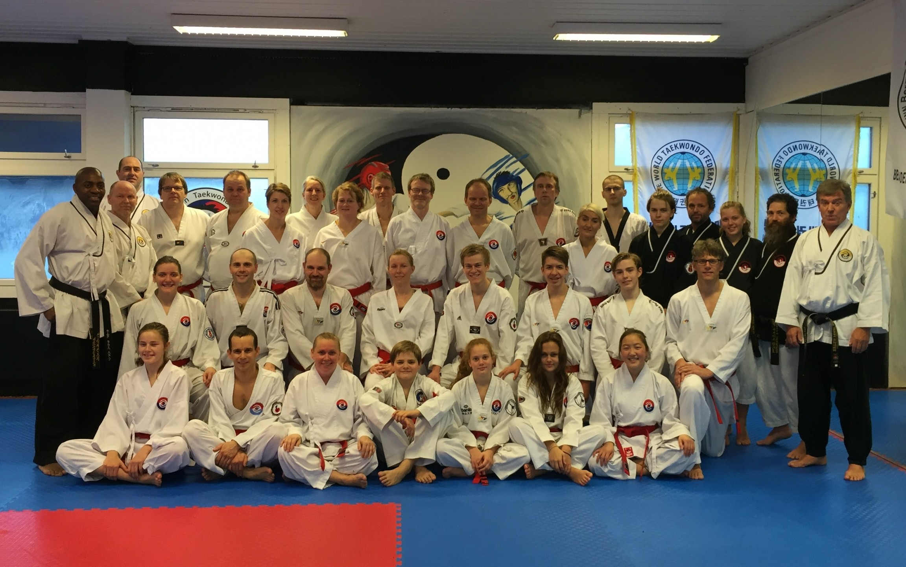

Innlegg
Dan seminar i Kongsberg TKD.

Klubben gratulerer Andrine og Tor-Brede med bestått Fysisk test og teoriprøve. Da er det bare å legge seg i hardtrening neste 1/2 år og finpusse teknikker og gjøre seg klar for en gradering på sommerfestivalen 2016.
RKTD stilte med Andrine, Tor-Brede, Artsiom og Geir på Dan seminaret i Kongsberg og hadde en fin treningshelg hvor vi fikk trent igjennom mye av TTU's pensum. Dette i seg selv er ikke rent lite.